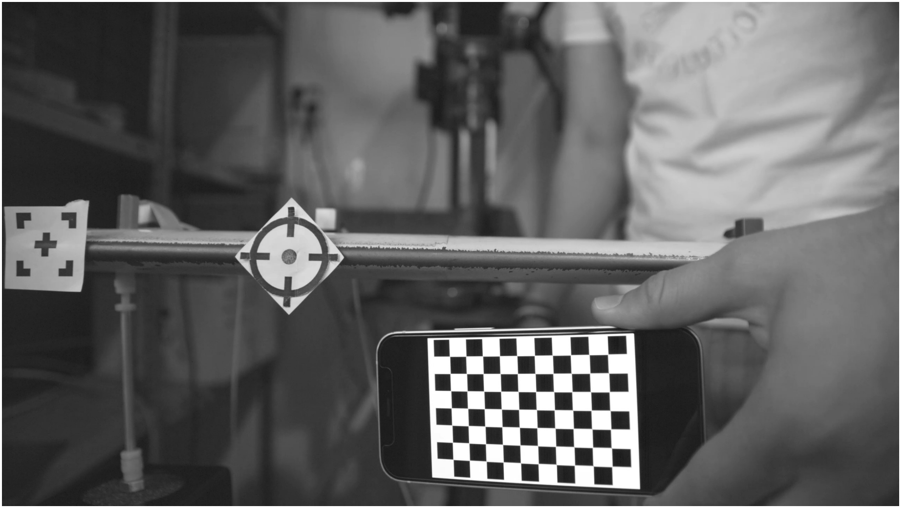
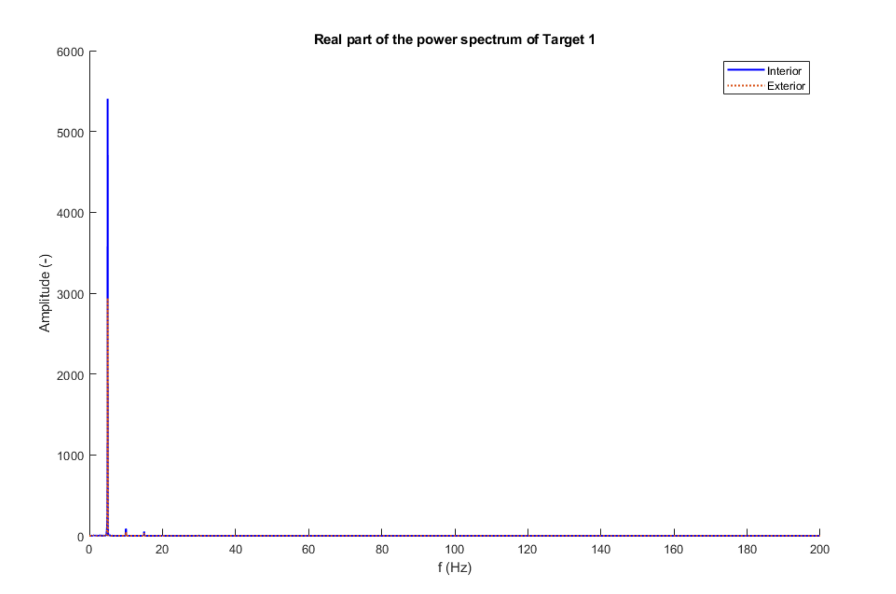

Input Video
Output Video

Displacement Measurements
Aerospace Bachelor's Thesis
Awarded 85% Grade
King Juan Carlos University
Project Objective
The aim of this project was to design and validate a non-contact vibrational analysis method using image recognition as a faster, more cost-effective alternative to traditional accelerometer or strain gauge setups. This is critical in environments where mass loading from sensors would compromise the integrity of the results, such as with lightweight composite structures in motorsport.
Methodology
A helicopter rotor blade was subjected to controlled frequency sweeps from a shaker. A high-speed camera recorded the response, and a custom MATLAB script was developed to process the images. The developed workflow is as follows:

Image calibration:
Calibrated the images with a checkerboard pattern to ensure accurate measurements and avoid lens distortion.

Feature recognition and tracking:
Used image recognition techniques to detect and track the targets throughout the video frames rejecting any false positives as shown in red in the image.

Data analysis:
Analysed and postprocessed the data to evaluate the structural characteristics. Applied Fast Fourier Transform (FFT) to the data to identify dominant frequencies.
Key Technical Outcomes
Developed a non-invasive cost-effective method for vibrational analysis.
Achieved pixel measurement accuracy for displacement tracking.
Validated a non-invasive method suitable for aeroelastic analysis.
Reduced setup time significantly compared to traditional methods.